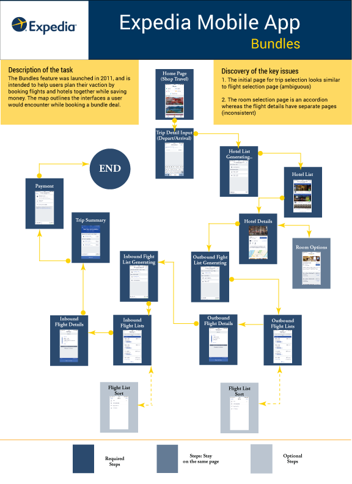
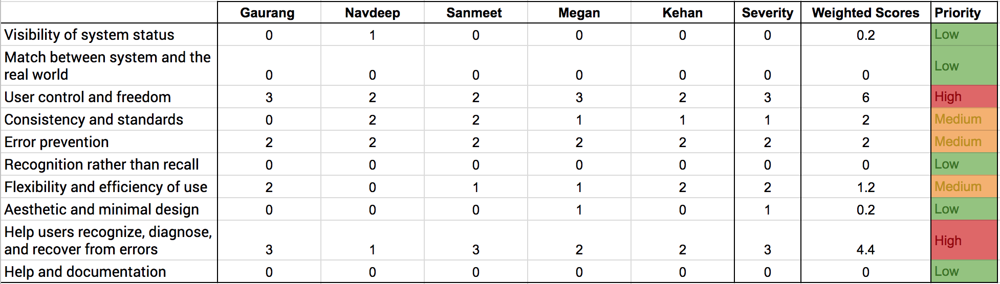
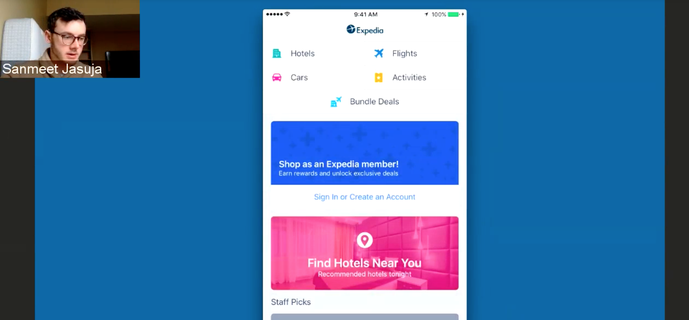

*Group project for Needs Assessment & Usability Evaluation class, Jan-April 2017
We chose to work on a specific feature of Expedia's iOS App - Bundles - as it involved both the flows for flight and hotel booking and followed a complex user flow that offered potential for improvement. By identifying the pain and pleasure points in the Bundles flow, we hoped to suggest recommendations that could be used for the standalone flight and hotel flows as well.
Our first step was to map out the entire user journey for the Bundles feature to get a better idea about the different flows involved and to observe the UI screens that a user has to experience.

Performing a Comparative Analysis helped us identify apps that offered same/ similar functionality and inspiration. Following Mark Newman's taxonomy, we classified 10 apps into categories such as direct, indirect, partial, parallel and analogous comparators. By analyzing other travel apps, we were able to find three areas where Expedia's app could improve - loading screen(s), calendar for picking travel date(s) and user reviews for hotels.
To gather quantitative as well as quantitative date about the target users, we decided to send out a survey. The survey was aimed at uncovering information about the factors considered by users while booking flights and hotels and the desirability of the Bundles feature in the Expedia app. We found some surprising results after analyzing the survey responses that further helped us prepare a set of recommendations for the client.
——
——
Using the list of heuristics defined by Nielsen, the team members analyzed the screens of the Bundles flow individually and assigned severity level to each heuristic. After consolidating the results, a final severity level was assigned to each heuristic by consensus to create list A. The severity levels of 0 through 4, assigned by individual team members, were assigned weights from 0 to 0.8. They were further multiplied and aggregated for each heuristic to create list B. Considering the weighted scores in list B and severity scores in list A, we assigned priorities for each heuristic.
Curious to find the issues that hamper usability, we conducted 5 usability tests with different test subjects. We developed a cohesive script with 3 scenarios that maximized the possibility of observing usability issues with the feature. A round of pilot testing ensured that the tasks could be completed by the participants within the stipulated time, without needing any additional information, apart from the given information.
A single usability testing session was divided into following phases - Introduction, handing over consent form, handing over the pre-test questionnaire, observing the user perform the tasks, post-test questionnaire and debrief. The tasks were developed to maximize the user interactions with the app by making them rely on different menus and functions such as search, sort and filter.
——
——
By observing the users' interactions with Bundles, we were able to observe some shortcomings of the feature. For example, the Hotels section of Bundles did not have a Search function even though the standalone Hotels section of Expedia's app had a Search bar. There was also no function to filter hotels according to criteria such as budget, location, ratings, etc. which made a couple of our tasks a bit difficult to complete. Further, error messages and inconsistencies on the Checkout screen, observed during the tests, validated the findings of our heuristics evaluation.
Having done a thorough analysis of the Bundles feature, we came up with a long list of recommendations. These recommendations included everything from UI changes to proposing additional functionality in the app. But a lot of these recommendations were solely based on our observations and analysis, without factoring in the client limitations. Considering the engineering overload and practicality, we proposed a reduced set of recommendations to our client -
These recommendations were submitted to the client in the form of a video (shown above).
Working with Expedia was definitely an amazing experience (shoutout to the Expedia team in Ann Arbor!). While working on the project, we came across various cultural and behavioral trends that we had not previously taken into consideration. It was interesting to see that a simple task of booking a vacation can be influenced by various factors. The travel industry certainly holds a lot of potential when it comes to designing good user experiences and I would definitely love to work on a similar project again.